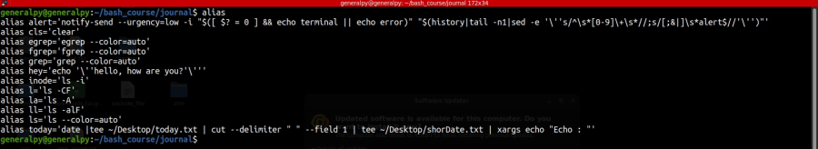
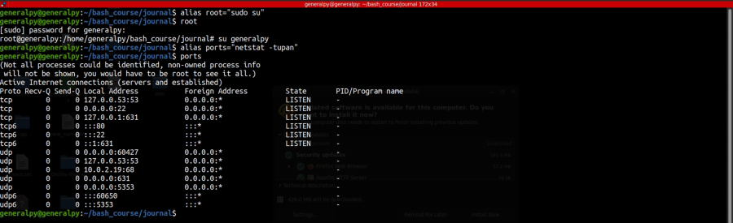
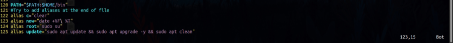
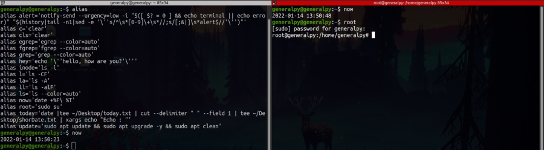

Aliases are a way to to shorten complex commands.
We can create alias for any command which is like a second name for that command and then run it to run the original command with different name.
To display all available aliases, use alias command with no options or arguments.

To set an alias, syntax is :
alias alias_name="command with options"

Aliases created this way are automatically removed when current terminal session ends or new session is started. To make aliases permanent we can enter aliases into .bashrc or .profile file.

Newly added aliases which are available in every bash session. Use source ~/.bashrc command in current session to load aliases in current sessions. Space is a special character which is used to separate options and arguments in a command but here in in time command we want to have a space in formatting so we escaped it using \.

To remove an alias use unalias command followed by alias name.